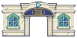

잔향도시 1층 확정 고정지형 · HOLO HOME
홀로도리 참고 · 홀로홈 로비와 외벽 수정
기존9×9칸 시설보다 넓은 17×13칸. 사진의 대리석 로비·파란 소파·좌식 공간·TV 코너·뒤쪽 양갈래 계단을 도트로 옮겼습니다. 1층마다 홀로홈 1개와 그 안의 전용 내려가는 계단 1개가 반드시 생성됩니다.
홀로홈 도트를 준비하고 있어요…
방향키·WASD / Q·E·Z·C 대각선 이동 · 바닥 클릭 이동 · 문을 향해 이동하면 먼저 엽니다. 계단 위에서 > 또는 <를 누르면 1층↔2층으로 이동합니다. 위치·문·탐험 기억을 이 브라우저에 저장합니다.
입구·외벽 통일

크림색 벽·몰딩·민트 창틀을 입구와 맞췄습니다. 외벽 높이는 기존 타일 규칙을 따릅니다.
실제 로비의 구성
뒤쪽 양갈래 계단과 발코니, 중앙 파란 소파와 낮은 흰 테이블, 왼쪽 책장·좌식 공간, 오른쪽 TV·분홍 수납장·게시판.
양갈래 계단은 로비의 건축 장식입니다. 실제 층 이동은 중앙 아치 아래의 전용 내려가는 계단으로 합니다.
1층 확정 출현과 전용 내려가는 계단,2층 왕복은 유지합니다.
참고한 홀로도리 실내 사진 보기
출처: 인사이드 선행 플레이 기사 · 실제 사진의 배색과 공간 구성을 참고한 우리 게임용 도트 시안입니다.
수정 전132와 비교하기